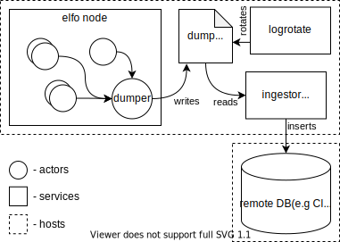

Introduction
This book aims to describe a superior approach to build heavily asynchronous and distributed applications based on the actor model.
Major part of the book is about the elfo framework and is illustrated with best practices of its usage. The second part of the book tells you about the best corporate practices of asynchronous applications' architecture.
Goals
- Assist in building fault-tolerant systems.
- Be performant enough for low-latency systems.
- Be observable, provide a lot of metrics to detect problems.
- Provide built-in support of exposing log events, dumps, metrics, and trace events.
- Distributing actors across several machines should be as simple as possible.
Non-goals
- Provide the most performant way to communicate between actors.
- Provide any HTTP server.
Features
- Asynchronous actors with supervision and custom life cycle.
- Two-level routing system: between actor groups (pipelining) and inside them (sharding).
- Multiple protocols: actors (so-called gates) can handle messages from different protocols.
- Multiple patterns of communication: regular messages, request-response (TODO: subscriptions).
- Config updating and distribution on the fly.
- Appropriate for both low latency and high throughput tasks.
- Tracing: all messages have
trace_idthat spread across the system implicitly. - Telemetry (via the
metricscrate). - Dumping: messages can be stored for further debugging.
- Seamless distribution across nodes TODO.
- Utils for simple testing.
- Utils for benchmarking TODO.
Comparison aka "Why not X"?
Where X = CSP
Usage of CSP in Rust can be illustrated in the following example:
// "Processes"
async fn read_file(path: &str, tx: Sender<Chunk>) { .. }
async fn decode_chunks(rx: Receiver<Chunk>, tx: Sender<SomeEvent>) { .. }
async fn process_events(rx: Receiver<SomeEvent>) { .. }
// "Channels"
let (chunks_tx, chunks_rx) = channel(100);
let (events_tx, events_rx) = channel(100);
spawn(read_file(path, chunks_tx));
spawn(decode_chunks(chunks_rx, events_tx));
spawn(process_events(events_rx));
The CSP approach is a perfect solution that doesn't require expertise in any frameworks for tools or simple applications with well-defined technical specifications and a small number of communications between processes. If this is your case, just use CSP.
However, complex applications tend to get more and more complicated over time, and their development and maintenance quickly become harder than in the actor model.
Pros of CSP
- Implementation of channels can be chosen by a developer, while actor frameworks determine a mailbox implementation.
- Processes can share the same channel using MPMC channels to implement work-stealing behavior. It's not an option for actors, where a mailbox is owned by exactly one actor.
Cons of CSP
- Processes in CSP are anonymous, while actors have identities. It means it's hard to distinguish logs and metrics because processes don't have names. Thus, the observability of CSP is much worse than that of the actor model.
- Actors are more decoupled; they can be discovered using some sort of service locators and even changed on the fly, e.g., due to restart.
- Actors can be distributed across several machines because they don't have to send messages directly to a mailbox; they can have a network before it.
- To add more connections between processes, we need to use more channels in one case and combine messages into big enumerations with unrelated items in other cases.
Where X = actix
TODO
Where X = bastion
TODO
Actors
The most important part of the actor model is, of course, the actor itself. It can be challenging to give the exact definition of this term. However, we can define an actor through its properties:
-
An actor is a unit of logic encapsulation
Actors solve a specific task instead of doing it all at once.
-
An actor is a unit of scheduling
Different threads cannot execute the same actor simultaneously1. However, many actors are executed concurrently, often parallel in many threads.
-
An actor is a unit of data encapsulation
Actors shouldn't share their data with other actors, shouldn't expose implementation details, etc. Do not communicate by sharing memory; instead, share memory by communicating.
-
An actor is a unit of failure encapsulation
Actors can fail, and it doesn't affect the work of other actors directly2.
-
An actor is a unit of communication
Actors can communicate with others by sending and receiving messages. Actors are uniquely identified by their addresses.
These properties allow us to build highly scalable and fault-tolerant systems relatively thinkable and straightforwardly without using complex concurrent data structures.
Actually, sometimes it's useful to use rayon or alternatives. It's possible in elfo by wrapping threads into an actor's scope.
Actors should be designed to be tolerant to failures of other actors.
A Mailbox
Every actor has his own mailbox, a queue containing envelopes sent by other actors to this one.
What's the envelope? The envelope is a wrapper around a message that includes also some useful metadata: the sender's address, time of sending moment, and some other information that is not so important for now.

A mailbox is the main source of messages for any actor. Messages are handled sequentially.
A mailbox can become full if the corresponding actor doesn't have time to process the message flow. In this case, the sending actor can decide to drop the message, wait for space in the mailbox or resend after some time. Such strategies will be discussed later.
Functional actors
Let's define a some simple actor using elfo and figure out what's happening.
The simplest way to define an actor as a function.
For example, let's define the simplest counter:
use elfo::prelude::*;
#[message]
pub struct Increment {
pub delta: u32,
}
#[message(ret = u32)]
pub struct GetValue;
pub fn counter() -> Blueprint {
ActorGroup::new().exec(|mut ctx| async move {
// Private state of the actor.
let mut value = 0;
// The main actor loop: receive a message, handle it, repeat.
// Returns `None` and breaks the loop if actor's mailbox is closed
// (usually when the system terminates).
while let Some(envelope) = ctx.recv().await {
msg!(match envelope {
Increment { delta } => {
value += delta;
},
// It's a syntax for requests.
(GetValue, token) => {
// ... and responses.
ctx.respond(token, value);
},
})
}
})
}
We haven't discussed actor groups yet, so don't pay attention for now.
Instead, let's talk about other things in the example:
ctx.recv()allows us to wait for the next message asynchronously. Thus, if the mailbox is empty, the actor will return control to the scheduler instead of spending CPU cycles or sleeping.msg!allows us to unpack envelopes and match against different types of messages. It's required, because Rust'smatchmust include patterns for the same data type only. However, we want to support different messages, often defined in different crates. Also, reusing thematchsyntax is highly desired in order to work well with tooling likerustfmtandrust-analyzer.(RequestType, token)is the syntax for handling requests.tokencannot be used more than once, thanks to Rust, so we cannot accidentally respond to the request twice. Also, the compiler will warn if we forget to handletoken. If the token is explicitly dropped without responding, the sending side will get the special error and decide whether it's normal or not. Note that it is possible to send request as a regular message usingctx.send()instead ofctx.request(). In this case, recipient will get a so-called "forgotten" token. Recipient can still reply using it, but the reply will be discarded before it is sent.
Now let's define another actor to communicate with the counter:
use elfo::prelude::*;
use counter::{Increment, GetValue};
pub fn sample() -> Blueprint {
ActorGroup::new().exec(|ctx| async move {
// Increment the counter, we aren't interested in errors.
let _ = ctx.send(Increment { delta: 1 }).await;
// ... and again.
let _ = ctx.send(Increment { delta: 3 }).await;
// Request the current counter's value and wait for the response.
if let Ok(value) = ctx.request(GetValue).resolve().await {
tracing::info!(value, "got it!");
}
}
}
We haven't connected our actors in any way, this will be discussed later.
Note: it's more useful to write complex actors in another way, which will be considered later in the Structural Actors section.
Actor lifecycle
An actor goes through several stages in life. Transitions between stages are accompanied by statuses. Statuses help us to understand better what's happening with actors. So, a good way to understand actor lifecycle is to get familiar with statuses.
Statuses
-
InitializingAn initial status. The actor doesn't handle incoming messages and is doing some initialization, e.g. subscribing to other actors, collecting an initial state, connecting to DB, etc.
-
NormalThe actor handles incoming messages.
This status appears on first
ctx.(try_)recv()call. -
TerminatingAn actor is preparing to termination, e.g. doing some cleanup, flushing data, etc.
It happens when the actor's mailbox is closed and all messages are handled. Additionally, if the actor uses
TerminationPolicy::manually, it also happens whenTerminateis received. -
TerminatedA terminal status. The actor's
exec()finished without errors. -
AlarmingThe actor has some long term problem, but still handles messages, maybe in a special way.
Currently, this status can be set manually only.
-
FailedA terminal status. The actor panicked or his
exec()returnsErr.
Built-in status transitions

The schema doesn't include the Alarming status, because it can be set only manually for now.
From the point of view of the main actor's loop:
async fn exec(mut ctx: Context) {
// Status: Initializing
// subscribe to other actors, connect to DB, etc
while let Some(envelope) = ctx.recv().await {
// Status: Normal
// handle messages
}
// Status: Terminating
// make cleanup, flush data, etc
} // Status: Terminated or Failed
Manual status management
It's possible to avoid managing statuses totally, built-in logic is reasonable enough. However, with the increasing complexity of actors, it can be helpful to provide more information about the current status.
The basic way to change status:
ctx.set_status(ActorStatus::ALARMING);
Also, details can be provided with each status:
ctx.set_status(ActorStatus::INITIALIZING.with_details("loading state"));
Subscribing to actor's statuses
TODO: SubscribeToActorStatuses, ActorStatusReport
Communication
Actors can communicate in many ways depending on the situation and desired guarantees.
Fire and Forget
The most straightforward way is to send a message with minimal guarantees.

However, it's possible to choose the desired behavior by calling the most appropriate method. All variants can be described by the following template: (try_|unbounded_)send(_to).
Methods with the _to suffix allow to specify a destination address as the first argument. Otherwise, the routing subsystem will be used.
The prefix describes what should happen if the destination mailbox is full:
| Syntax | Error cases | Description |
|---|---|---|
send().await | Closed | Blocks until a destination mailbox has space for new messages |
try_send() | Full, Closed | Returns Full if the mailbox is full |
unbounded_send() | Closed | Forcibly increase the mailbox, not implemented yet |
All methods can return Closed if the destination actor is closed.
The form send().await is used when desired behavior is backpressure, while try_send() is for actors with predicted latency, when it's acceptable to lose messages or it can be handled manually. unbounded_send() should be avoided because it can increase mailboxes unpredictably, leading to OOM.
Examples
#[message]
struct SomeMessage;
// Do not care if the target actor is closed or full.
let _ = ctx.try_send(SomeMessage);
// Block if the destination mailbox is full and ignore if closed.
let _ = ctx.send(SomeMessage).await;
// Fail the current actor if the destination is closed.
ctx.send(SomeMessage).await?;
// Manually implement backpressure, e.g. store messages.
if let Err(err) = ctx.try_send(SomeMessage) {
let msg = err.into_inner(); // msg: SomeMessage
}
Blocking Request-Response
Some communications between actors require response message being sent back to the sender.

TODO
Examples
#[message(ret = Result<(), DoSomethingRejected>)]
struct DoSomething;
#[message]
struct DoSomethingRejected(String);
TODO
Non-blocking Request-Response
TODO
State
TODO
Examples
TODO
Subscriptions
TODO
Sources
In the context of the elfo actor system, sources serve as conduits for integrating various streams of incoming messages, such as timers, signals, futures, and streams. They allow for a seamless amalgamation of these additional streams with the messages arriving in the mailbox. Consequently, features like tracing, telemetry, and dumps are uniformly available for both regular and source-generated messages.
You can instantiate sources using dedicated constructors that correspond to different types. It's important to note that initially, these sources are inactive; they only start generating messages once they are linked to the context through the method ctx.attach(_). This method also returns a handler, facilitating the management of the source. Here is how you can utilize this method:
let unattached_source = SomeSource::new();
let source_handle = ctx.attach(unattached_source);
If necessary, you can detach sources at any time by invoking the handle.terminate() method, as shown below:
source_handle.terminate();
Under the hood, the storage and utilization of sources are optimized significantly to support multiple sources at the same time, thanks to the unicycle crate. While the system supports an unlimited number of sources without offering backpressure, it's essential to moderate the usage to prevent potential out-of-memory (OOM) errors.
Intervals
The Interval source is designed to generate messages at a defined time period.
To activate the source, employ either the start(period) or start_after(delay, period) methods, as shown below:
use elfo::time::Interval;
#[message]
struct MyTick; // adhering to best practice by using the 'Tick' suffix
ctx.attach(Interval::new(MyTick))
.start(Duration::from_secs(42));
while let Some(envelope) = ctx.recv().await {
msg!(match envelope {
MyTick => { /* handling code here */ },
});
}
Adjusting the period
In instances where you need to adjust the timer's interval, possibly as a result of configuration changes, the interval.set_period() method comes in handy:
use elfo::{time::Interval, messages::ConfigUpdated};
#[message]
struct MyTick; // adhering to best practice by using the 'Tick' suffix
let interval = ctx.attach(Interval::new(MyTick));
interval.start(ctx.config().period);
while let Some(envelope) = ctx.recv().await {
msg!(match envelope {
ConfigUpdated => {
interval.set_period(ctx.config().period);
},
MyTick => { /* handling code here */ },
});
}
To halt the timer without detaching the interval, use interval.stop(). This method differs from interval.terminate() as it allows for the possibility to restart the timer later using interval.start(period) or start_after(delay, period) methods.
It's essential to note that calling interval.start() at different points can yield varied behavior compared to invoking interval.set_period() on an already active interval. The interval.set_period() method solely modifies the existing interval without resetting the time origin, contrasting with the rescheduling functions (start_* methods). Here's a visual representation to illustrate the differences between these two approaches:
set_period(10s): | 5s | 5s | 5s | # 10s | 10s |
start(10s): | 5s | 5s | 5s | # 10s | 10s |
#
called here
Tracing
Every message starts a new trace, thus a new TraceId is generated and assigned to the current scope.
Delays
The Delay source is designed to generate one message after a specified time:
use elfo::time::Delay;
#[message]
struct MyTick; // adhering to best practice by using the 'Tick' suffix
while let Some(envelope) = ctx.recv().await {
msg!(match envelope {
SomeEvent => {
ctx.attach(Delay::new(ctx.config().delay, MyTick));
},
MyTick => { /* handling code here */ },
});
}
This source is detached automatically after emitting a message, there is no way to reschedule it. To stop delay before emitting, use the delay.terminate() method.
Tracing
The emitted message continues the current trace. The reason for it is that this source is usually used for delaying specific action, so logically it's continues the current trace.
Signals
The Signal source is designed to generate a message once a signal is received:
use elfo::signal::{Signal, SignalKind};
#[message]
struct ReloadFile;
ctx.attach(Signal::new(SignalKind::UnixHangup, ReloadFile));
while let Some(envelope) = ctx.recv().await {
msg!(match envelope {
ReloadFile => { /* handling code here */ },
});
}
It's based on the tokio implementation, so it should be useful to read about caveats.
Tracing
Every message starts a new trace, thus a new trace id is generated and assigned to the current scope.
Streams
The Stream source is designed to wrap existing futures/streams of messages. Items can be either any instance of Message or Result<impl Message, impl Message>.
Once stream is exhausted, it's detached automatically.
Futures
Utilize Stream::once() when implementing subtasks such as initiating a background request:
use elfo::stream::Stream;
#[message]
struct DataFetched(u32);
#[message]
struct FetchDataFailed(String);
async fn fetch_data() -> Result<DataFetched, FetchDataFailed> {
// ... implementation details ...
}
while let Some(envelope) = ctx.recv().await {
msg!(match envelope {
SomeEvent => {
ctx.attach(Stream::once(fetch_data()));
},
DataFetched => { /* handling code here */ },
FetchDataFailed => { /* error handling code here */ },
});
}
futures::Stream
Stream::from_futures03 is used to wrap existing futures::Stream:
use elfo::stream::Stream;
#[message]
struct MyItem(u32);
let stream = futures::stream::iter(vec![MyItem(0), MyItem(1)]);
ctx.attach(Stream::from_futures03(stream));
while let Some(envelope) = ctx.recv().await {
msg!(match envelope {
MyItem => { /* handling code here */ },
});
}
To produce messages of different types from the stream, it's possible to cast specific messages into AnyMessage (undocumented for now):
futures::stream::iter(vec![MyItem(0).upcast(), AnotherItem.upcast()])
Generators
Stream::generate is an alternative to the async-stream crate, offering the same functionality without the need for macros, thereby being formatted by rustfmt:
use elfo::stream::Stream;
#[message]
struct SomeMessage(u32);
#[message]
struct AnotherMessage;
ctx.attach(Stream::generate(|mut e| async move {
e.emit(SomeMessage(42)).await;
e.emit(AnotherMessage).await;
}));
while let Some(envelope) = ctx.recv().await {
msg!(match envelope {
SomeMessage(no) | AnotherMessage => { /* handling code here */ },
});
}
Tracing
The trace handling varies depending upon the method used to create the stream:
- For
Stream::from_futures03(): each message initiates a new trace. - For
Stream::once()andStream::generate(): the existing trace is continued.
To override the current trace, leverage scope::set_trace_id() at any time.
Structural Actors
Organizing actors using the functions can quickly escalate in complexity, making scalability an issue. A more streamlined approach is to employ structural actors, where all actor-related code is consolidated within a specific actor structure. Notably, elfo does not provide any Actor trait, precluding constructs like impl Actor for Counter. As such, the following code serves as a flexible pattern that can be adapted as required.
Complex actors require decomposition into multiple related functions, which scales worse with functional actors considered earlier. The better way to organize actors is to use so-called structural actors. The idea is to write all actor-related code in some specific actor structure. elfo has no any Actor trait, so it's impossible to see impl Actor for Counter or something like this. Thus, the following code is some sort of pattern and can be modified if needed.
To illustrate, let's reconfigure the counter actor to adopt a structural style. The protocol code remains unchanged:
#[message]
pub struct Increment {
pub delta: u32,
}
#[message(ret = u32)]
pub struct GetValue;
Here's how the counter's code transitions to this new approach:
use elfo::prelude::*;
// This constitutes the sole public API of the actor.
// It gets invoked as `counters.mount(counter::new())` in services.
pub fn new() -> Blueprint {
ActorGroup::new().exec(|mut ctx| Counter::new(ctx).main())
}
struct Counter {
ctx: Context,
value: u32,
}
impl Counter {
fn new(ctx: Context) -> Self {
Self {
ctx,
value: 0,
}
}
async fn main(mut self) {
while let Some(envelope) = self.ctx.recv().await {
msg!(match envelope {
// More elaborate handling code can be delegated to methods.
// These methods can easily be async.
msg @ Increment => self.on_increment(msg),
// Simpler code, however, can still be processed directly here.
(GetValue, token) => {
self.ctx.respond(token, self.value);
},
})
}
}
fn on_increment(&mut self, msg: Increment) {
self.value += msg.delta;
}
}
This refactoring can significantly enhances readability in many cases, making it an advantageous choice for complex actors.
Furthermore, sources can be encapsulated within the actor structure, facilitating operation from methods. To illustrate, we can introduce a feature that outputs the current value when the counter stabilizes (i.e. remains unchanged for a period). Here's how:
use std::{time::Duration, mem};
use elfo::time::Delay;
struct Counter {
ctx: Context,
stable_delay: Delay<StableTick>,
value: u32,
}
#[message]
struct StableTick;
impl Counter {
fn new(mut ctx: Context) -> Self {
let delay = Delay::new(Duration::from_secs(1), StableTick);
Self {
value: 0,
stable_delay: ctx.attach(delay),
ctx,
}
}
async fn main(mut self) {
// ...
StableTick => self.on_stable(),
// ...
}
fn on_increment(&mut self, msg: Increment) {
self.value += msg.delta;
self.stable_delay.reset();
}
fn on_stable(&self) {
tracing::info!("counter is stable");
}
}
Actor Groups
Before talking about actor groups, we need to consider another vital topic: scaling.
Scaling
Scaling is helpful both to increase throughput of a system and reduce latency.
Two known ways to do scaling are pipelining and sharding.
Pipelining
Pipelining implies dividing the system into several sequential parts. Thus, instead of doing all work in one actor, different actors do the work in parts.

Pipelining increases minimal possible latency because of overhead costs but can reduce maximal latency because of parallel execution of different parts. Throughput is the minimum of parts' throughputs. However, total throughput increases because every actor in the pipeline does less work.
Usually, it's not necessary to think about pipelining because well-designed systems are already divided into multiple actors according to their responsibilities, not because of performance requirements.
Sharding
Sharding implies multiple running actors with the same, possible parameterized, code and responsibility.
Sharding requires some work to route messages to the corresponding shard. Thus, throughput is increased sublinearly. Similarly to pipelining, maximal latency is reduced because arrival messages see ahead of themself fewer messages.
Actor Groups
Actor groups in elfo are a solution for the sharding problem. Each actor has some actor key, a unique label inside a group, that can be used for routing purposes.
The group's router is not an actor but some shared code that's executed on sending side to determine which actor should receive a message. Usually, routers are stateless; thus, this approach is more performant and scalable than routers implemented as separate actors.
elfo doesn't support running actors without actor groups. Instead, it's ok to use groups with only one actor inside if it's meaningless to do sharding for now.
Note that actor keys can be arbitrary structures, not mandatory strings.
See the next chapter to get more details about routing.
Stability
TODO: move to the first usage.
It's useful to know the term stability. Stable systems are restricted only by input rate and don't have 100% utilization. We usually want to minimize latency in such systems while keeping throughput higher than real-life requirements. Most of systems are supposed to be stable and have predictable latency. Unstable systems have 100% utilization and reach their throughput. For instance, ETL systems.
Routing
Routing is the process of searching for the actor that will handle a sent message. In order to append the message to his mailbox, we need to discover the actor's address.
elfo offers a two-level routing system. What does it mean? Messages can pass through up to two steps of routing, depending on used methods, as shown on the following diagram:

- If we don't know any address (
ctx.(try_)send(msg)andctx.request(msg)), the inter-group router is called to determine which groups are interested in the message. Then, the corresponding inner-group router is called for each interested group to decide which shards should receive the message. - Only the inner-group router is called if we already know a group's address (
ctx.(try_)send_to(group_addr, msg)andctx.request_to(group_addr, msg)). - If we already know an actor's address (
ctx.(try_)send_to(actor_addr, msg)andctx.request_to(actor_addr, msg)), nothing additional is done because we already know which actor should handle the message.
Note that if several actors are interested in the message, each receives a copy of the message. It's ok for messages without heap-allocated fields or for rare messages, but for the big ones consider wrapping into Arc to reduce the clone() overhead.
Inter-group routing
Inter-group routing is responsible for connecting actor groups among themselves.
Let's consider the following architecture scheme:

Actor groups and connections between them are defined in so-called "topology":
fn topology(config_path: &str) -> elfo::Topology {
let topology = elfo::Topology::empty();
let logger = elfo::logger::init();
// Define system groups.
let loggers = topology.local("system.loggers");
let telemeters = topology.local("system.telemeters");
let dumpers = topology.local("system.dumpers");
let pingers = topology.local("system.pingers");
let configurers = topology.local("system.configurers").entrypoint();
// Define user groups.
let group_a = topology.local("group_a");
let group_b = topology.local("group_b");
let group_c = topology.local("group_c");
// Define connections between user actor groups.
group_a.route_to(&group_b, |e| { // "e" means "Envelope"
msg!(match e {
MessageX | MessageY => true,
_ => false,
})
});
group_a.route_to(&group_c, |e| {
msg!(match e {
MessageX => true,
_ => false,
})
});
group_b.route_to(&group_c, |e| {
msg!(match e {
MessageZ => true,
_ => false,
})
});
group_c.route_to(&group_a, |e| {
msg!(match e {
MessageW => true,
_ => false,
})
});
// Mount specific implementations.
loggers.mount(logger);
telemeters.mount(elfo::telemeter::new());
dumpers.mount(elfo::dumper::new());
pingers.mount(elfo::pinger::new(&topology));
// Actors can use `topology` as a service locator.
// Usually it should be used for utilities only.
configurers.mount(elfo::configurer::from_path(&topology, config_path));
group_a.mount(group_a::new());
group_b.mount(group_b::new());
group_c.mount(group_c::new());
topology
}
Not all messages should be specified at this level. Usually, only requests and some multicast events are specified here, but not messages that will be passed directly, such as responses or events of subscriptions.
Inner-group routing
Inner-group routing is responsible for choosing which shards should handle incoming messages.
The inner-group router is defined next to the actor implementation, in the group declaration.
Stateless router
use elfo::routers::{Outcome, MapRouter};
ActorGroup::new()
.router(MapRouter::new(|e| {
msg!(match e {
MessageX { key, .. } => Outcome::Unicast(key),
MessageY { keys, .. } => Outcome::Multicast(keys.to_vec()),
MessageZ => Outcome::Broadcast,
_ => Outcome::Default,
})
}))
.exec(exec);
Possible Outcome's variants:
Outcome::Unicastsends the message only to the actor with a specified key. If there is no active or restarting actor for the key, the new one will be started.Outcome::GentleUnicastworks likeOutcome::Unicast, but doesn't lead to spawning new actors, instead a message is discarded.Outcome::Multicastsends to several actors. New actors will be started.Outcome::GentleMulticastworks likeOutcome::Multicast, but doesn't lead to spawning new actors, instead a message is discarded.Outcome::Broadcastsends to all active actors.Outcome::Discarddrops the message (that leads to an error on sending side).Outcome::Defaultbehaviour depends on the message type:Outcome::DiscardforValidateConfigmessage.Outcome::Broadcastfor all other system messages (such asUpdateConfig,Terminate, etc).Outcome::Discardfor user-defined messages.
Stateful router
Sometimes we need to use a router with rarely changing state. If the state should be changed often, consider using a dedicated actor as a router.
To create a stateful router use the MapRouter::with_state constructor. Note that the state type should implement Default, Send and Sync.
ActorGroup::new()
.router(MapRouter::with_state(
// Called if the config is changed.
|config: &Config, state| make_new_state(..),
// The routing function.
|e, state| {
msg!(match e { .. })
}
))
.exec(exec);
The state is recreated every time when the config is changed. Useful when all needed information (e.g. a list of actors) can be extracted from the config. Note that recreation doesn't block execution; the state is atomically replaced only once make_new_state(..) is finished.
Supervision
Startup
Once the system is started, the system.init actor starts all actors marked as entrypoint() in the topology. Usually, it's only the system.configurers group. Entry points must have empty configs.
Then, system.configurers loads the config file and sends UpdateConfig to all actor groups. This message is usually used to start any remaining actors in the system. Thus, you need to define routing for UpdateConfig with either Outcome::Unicast or Outcome::Multicast for actor keys you want to start on startup.
Note that the actor system terminates immediately if the config file is invalid at startup (elfo::start() returns an error).
Reconfiguration
Reconfiguration can be caused in several cases:
- The configurer receives
ReloadConfigsorTryRealodConfigs. - The process receives
SIGHUP, it's an equivalent to receivingReloadConfigs::default(). - The process receives
SIGUSR2, it's an equivalent to receivingReloadConfigs::default().with_force(true).
What's the difference between default behavior and with_force(true) one? By default, group's up-to-date configs aren't sent across the system. In the force mode, all configs are updated, even unchanged ones.
The reconfiguration process consists of several stages:
- Config validation: the configurer sends the
ValidateConfigrequest to all groups and waits for responses. If all groups respondOk(_)or discard the request (which is the default behaviour), the config is considered valid and the configurer proceeds to the next step. - Config update: the configurer sends
UpdateConfigto all groups. Note that it is sent as a regular message, rather than request, making config update asynchronous. System does not wait for all configs to apply before finishing this stage and it is possible for an actor to fail while applying the new config. Despite actor failures, any further actors spawned (or restarted) will have the new config available for them.
More information about configs and the reconfiguration process is available on the corresponding page.
Restart
Three restart policies are implemented now:
RestartPolicy::on_failures(by default) actors are restarted only after failures (theexecfunction returnedError panicked).RestartPolicy::alwaysactors are restarted after termination (theexecfunction returnedOkor()) and failures.RestartPolicy::neveractors are never restarted. However, they can be started again on incoming messages.
If the actor is scheduled to be restarted, incoming messages cannot spawn another actor for his key.
Repetitive restarts are limited by a linear backoff mechanism:
- If there are no restarts for 5s, restart an actor immediately.
- Otherwise, increase restart time by 5s and schedule restarting.
- Maximum restart time is limited by 30s.
These constants aren't configurable for now (elfo#62).
The restart policy can be chosen while creating ActorGroup:
use elfo::group::{RestartPolicy, ActorGroup};
ActorGroup::new().restart_policy(RestartPolicy::always())
ActorGroup::new().restart_policy(RestartPolicy::on_failures())
ActorGroup::new().restart_policy(RestartPolicy::never())
Termination
System termination is started by the system.init actor in several cases:
- Received
SIGTERMorSIGINTsignals, Unix only. - Received
CTRL_C_EVENTorCTRL_BREAK_EVENTevents, Windows only. - Too high memory usage, Unix only. Now it's 90% (ratio of RSS to total memory) and not configurable (elfo#60).
The process consists of several stages:

system.initsends to all user-defined groups "polite"Terminate::default()message.- Groups' supervisors stop spawning new actors.
Terminateis routed as a usual message withOutcome::Broadcastby default.- For
TerminationPolicy::closing(by default): the mailbox is closed instantly,ctx.recv()returnsNoneafter already stored messages. - For
TerminationPolicy::manually: the mailbox isn't closed,ctx.recv()returnsTerminatein order to handle in on your own. Usectx.close()to close the mailbox.
- If some groups haven't terminated after 30s,
system.initsendsTerminate::closing()message.Terminateis routed as a usual message withOutcome::Broadcastby default.- For any policy, the mailbox is closed instantly,
ctx.recv()returnsNoneafter already stored messages.
- If some groups haven't terminated after another 15s,
system.initstops waiting for that groups. - Repeat the above stages for system groups.
Timeouts above aren't configurable for now (elfo#61).
The termination policy can be chosen while creating ActorGroup:
use elfo::group::{TerminationPolicy, ActorGroup};
ActorGroup::new().termination_policy(TerminationPolicy::closing())
ActorGroup::new().termination_policy(TerminationPolicy::manually())
Configuration
System messages
ValidateConfig. This message is designed to validate config against actor's state. Any other validation should happen on the deserialization stage. Consider using validator for complex validation at deserialization time.
TODO
Logging
TODO
Telemetry
Introduction
TODO: metrics crate, metric types.
All metrics are provided with the actor_group and, optionally, actor_key labels. The last one is added for actor groups with enabled system.telemetry.per_actor_key option.
Read more information about metric types.
TODO: tips, prefer increment_gauge! over gauge!
Configuration
Telemetry can be configured separately for each actor group. Possible options and their default values:
[some_group]
system.telemetry.per_actor_group = true
system.telemetry.per_actor_key = false
Note that using per_actor_key can highly increase a number of metrics. Use it only for low cardinality groups.
TODO: elfo-telemeter config.
Built-in metrics
elfo is shipped with a lot of metrics. All of them start with the elfo_ prefix to avoid collisions with user defined metrics.
Statuses
-
Gauge
elfo_active_actors{status}The number of active actors in the specified status.
-
Gauge
elfo_restarting_actorsThe number of actors that will be restarted after some time.
-
Counter
elfo_actor_status_changes_total{status}The number of transitions into the specified status.
Messages
-
Counter
elfo_sent_messages_total{message, protocol}The number of sent messages.
-
Summary
elfo_message_handling_time_seconds{message, protocol}Spent time on handling the message, measured between
(try_)recv()calls. Used to detect slow handlers. -
Summary
elfo_message_waiting_time_secondsElapsed time between
send()and correspondingrecv()calls. Usually it represents a time that a message spends in a mailbox. Used to detect places that should be sharded to reduce a total latency. -
Summary
elfo_busy_time_secondsSpent time on polling a task with an actor. More precisely, the time for which the task executor is blocked. Equals to CPU time if blocking IO isn't used.
Log events
-
Counter
elfo_emitted_events_total{level}The number of emitted events per level (
Error,Warn,Info,Debug,Trace). -
Counter
elfo_limited_events_total{level}The number of events that haven't been emitted because the limit was reached.
-
Counter
elfo_lost_events_total{level}The number of events that hasn't been emitted because the event storage is full.
Dump events
-
Counter
elfo_emitted_dumps_totalThe number of emitted dumps.
-
Counter
elfo_limited_dumps_totalThe number of dumps that haven't been emitted because the limit was reached.
-
Counter
elfo_lost_dumps_totalThe number of dumps that hasn't been emitted because the dump storage is full.
Other metrics
TODO: specific to elfo-logger, elfo-dumper, elfo_telemeter
Derived metrics
Statuses
TODO
Incoming/outgoing rate
TODO
rate(elfo_message_handling_time_seconds_count{actor_group="${actor_group:raw}",actor_key=""}[$__rate_interval])
Waiting time
TODO
rate(elfo_message_waiting_time_seconds{actor_group="${actor_group:raw}",actor_key="",quantile=~"0.75|0.9|0.95"}[$__rate_interval])
Utilization
TODO
rate(elfo_message_handling_time_seconds_sum{actor_group="${actor_group:raw}",actor_key=""}[$__rate_interval])
Executor utilization ( CPU usage)
TODO
The time for which the task executor is blocked. Equals to CPU time if blocking IO isn't used.
rate(elfo_busy_time_seconds_sum[$__rate_interval])
Dashboards
TODO
Implementation details
TODO
Dumping
Introduction
Dumping is the process of storing incoming and outgoing messages for every actor, including ones from mailboxes and all other sources like timers, streams, and so on. The primary purpose is future tracing, but it also can be used for regression testing.
Dumping has a lot of common with logging, but it's more efficient and optimized for storing a lot of messages, so it has high throughput requirements instead of low latency like in the logging task, where records are supposed to be delivered as soon as possible, especially warnings and errors.
Usage
Enable dumping
Dumping is disabled by default until the topology contains the system.dumpers group.
Elfo provides the default implementation for such group, that's available with the full feature and exported as elfo::dumper:
let topology = elfo::Topology::empty();
let dumpers = topology.local("system.dumpers");
// ...
dumpers.mount(elfo::dumper::new());
Besides this, the path to a dump file must be specified in the config:
[system.dumpers]
path = "path/to/dump/file.dump"
Configure dumping on a per-group basis
Dumping settings can be specified for each actor group individually. Note that the settings can be changed and applied on the fly.
Example:
[some_actor_group]
system.dumping.disabled = true # false by default
system.dumping.rate_limit = 100500 # 100000 by default
Dumps above the rate limit are lost, but the sequence number is incremented anyway to detect missed messages later.
Configure dumping on a per-message basis
Simply add the message(dumping = "disabled") attribute to the message. Another and default value of the attribute is "full".
#[message(dumping = "disabled")]
pub struct SomethingHappened {
// ...
}
Shorten fields of a message
Sometimes the content of messages is too large, for instance, in writing a backend for graph plotting, where every response can contain thousands of points. We don't want to lose additional information about responses, but saving whole messages is very expensive in this case.
For this situation, elfo provides a helper to hide specified fields during serialization, but only in the dumping context. So, these messages still will be properly sent over the network, where serialization is used too.
#[message]
pub struct ChunkProduced {
pub graph_id: GraphId,
#[serde(serialize_with = "elfo::dumping::hide")]
pub points: Vec<(f64, f64)>, // will be dumped as "<hidden>"
}
Such messages cannot be deserialized properly; that's ok until they are used as input for [regression testing][regression].
Metrics
TODO
Local storage
The default implementation of dumpers writes all dumps to a file on the local file system.
Even home-purpose SSDs can achieve 3GiB/s in 2021, which should be more than enough to avoid a bottleneck in this place.
Dumps are stored in an uncompressed way so that they can take a lot of space. So, it's essential to rotate the dump file timely and delete outdated ones.
Note that message ordering between actor groups (and even inside the same actor) can be easily violated because of implementation details. Therefore, in the case of reading from local dump files, you should sort rows by the timestamp field.
The structure of dump files
Dump files contain messages in the newline-delimited JSON format. Each line is object containing the following properties:
gan actor group's namekan optional actor's keynnode_nossequence_no, unique inside an actor groupttrace_idtstimestampddirection, "In" or "Out"clan optional classmna message's namempa message's protocol, usually a crate, which contains the messagemka message's kind, "Regular", "Request" or "Response"ma nullable message's bodycan optional correlation id, which links requests with corresponding responses
Terms:
- optional means that the property can be omitted, but if it's present, then its value isn't
null. - nullable means that the property is present always, but the value can be
null.
The sequence_no field can be used to detect missed messages because of limiting.
TODO: note about classes
Dump file rotation
elfo::dumper doesn't use any kind of partitioning and relies on an external file rotation mechanism instead. It means some additional configuration is required, but it provides more flexibility and simplifies the dumper.
The dumper listens to the SIGHUP signal to reopen the active dump file. Besides this, the dumper accepts the elfo::dumper::ReopenDumpFile command.
The most popular solution for file rotation is, of course, logrotate.
TODO: logrotate config
Tip: if dumps are not supposed to be delivered to DB, use hard links to save the dump file for later discovery and avoid deletion.
Remote storage
Depending on your goals, you may or may not want to send your dump files to remote file storage. It can highly improve search capabilities (primarily because of indexing trace_id) and space usage but requires additional infrastructure for dumping. Usually, it's ok for many services to use only local storage. Dumps are stored in a time-ordered way and, thanks to the structure of trace_id, can be used for good enough search. However, elfo doesn't provide the utility to search these files for now.
Ok, so you want to store dumps in DB. The right choice, if you can afford it. What should you do?
The common schema looks like

TODO: add a link to the example with vector.dev and clickhouse
Implementation details
TODO: implementation has been changed a lot, need to update the section
At a top level, dumping is separated into two parts: the dumping subsystem and the dumper.
The dumping subsystem is based on sharded in-memory storage containing a limited queue of messages. We use a predefined number of shards for now, but we will likely use the number of available cores in the future. Every thread writes to its dedicated shard. Such an approach reduces contention and false sharing between threads.

The dumper sequentially, in a round-robin way, replaces the shard's queue with the extra one, then reads and serializes all messages and writes them to the dump file. All this work happens on a timer tick. Firstly, it's one of the simplest ways to get appropriate batching. Secondly, because the dumper uses tokio::task::spawn_blocking and blocking writes insides, that's more effective than using async tokio::fs directly. The timer approach allows us to reduce the impact on the tokio executor. However, this behavior is going to be improved for environments with io_uring in the future.
The dumper holds the lock only for a small amount of time to replace the queue inside a shard with another one, which was drained by the dumper on the previous tick. Thus, the actual number of queues is one more than shards.
All actors in a group share the same handler with some common things like sequence_no generator and rate limiter. Whenever an actor sends or receives a message, the handler is used to push message to the shard according to the current thread. Thus, messages produced by the same actor can reorder if it's migrated to another thread by a scheduler.
Yep, we can restore order in the dumper, but don't do it now because remote DB is doing it anyway. However, we can add the corresponding option in the future. It's not trivial, although.
Tracing
TODO
TraceId
This ID is periodically monotonic and fits great as a primary key for tracing entries.
It was accomplished by using rarely (approx. once a year) wrapping timestamp ID component.
TraceId essentially is:
\[ \operatorname{trace\_id} = \operatorname{timestamp} \dot{} 2^{38} + \operatorname{node\_no} \dot{} 2^{22} + \operatorname{chunk\_no} \dot{} 2^{10} + \operatorname{counter} \]
This formula's parameters were chosen carefully to leave a good stock of spare space for TraceId's components inside the available set of 63-bit positive integers.
You may see the general idea by looking at the bits distribution table.
From MSB to LSB:
| Bits | Description | Range | Source |
|---|---|---|---|
| 1 | Reserved | 0 | - |
| 25 | timestamp in secs | 0..=33_554_431 | Clock at runtime |
| 16 | node_no | 0..=65_535 | Externally specified node (process) configuration |
| 12 | chunk_no | 0..=4095 | Some number produced at runtime |
| 10 | counter | 1..=1023 | A counter inside the chunk |
The code generating TraceId of course can be optimized by using bit shifts for fast multiplication on a power of two:
trace_id = (timestamp << 38) | (node_no << 22) | (chunk_no << 10) | counter
TraceId uses time as its monotonicity source so timestamp is probably the most important part of the ID.
Note that timestamp has pretty rough resolution in seconds.
How long you can count seconds inside 25 bits?
\[ \operatorname{timestamp}_{max} = \frac{2^{25} - 1}{60 \dot{} 60 \dot{} 24} = \frac{33554431}{86400} \approx 388 \text{ days} \]
Which is almost a year plus 23 days.
What happens when this almost-one-year term ends?
timestamp starts counting from 0 once again:
TIMESTAMP_MAX = (1 << 25) - 1 // 0x1ff_ffff
timestamp = now_s() & TIMESTAMP_MAX
This means that primary key is guaranteed to act as a unique identifier for one year.
To keep an order of entries between monotonic periods of TraceId use some fully monotonic (but not necessarily unique) field as a sorting key for your entries (created_at or seq_no / sequential_number).
TraceId with such timestamp part is well optimized to produce a lot of entities worth querying for only a limited period of time: logs, dumps or tracing entries.
However you're able to store such entries as long as you like and use data skipping indices for quick time series queries.
To make IDs unique across several instances of your system without any synchronization between them node_no ID component should be externally specified from the system deployment configuration.
TODO: actualize information about thread_id: it's not used by elfo, but appropriate way to generate trace_id in other systems that want to interact with elfo.
thread_id shares bit space with counter. At the start of the system you should determine how much threads your node could possibly have and choose appropriate \( \operatorname{counter}_{max} \) according to that.
Previous components segregated entries produced by separate threads on every instance of the system at different seconds.
To create multiple unique IDs during a single second inside a single thread we use counter ID component.
Let's calculate how much records per second (\( \operatorname{RPS}_{max} \)) allows us to produce counter with the bounds we've chosen.
Assuming we have 32 threads:
\[ \operatorname{RPS}_{max} = \frac{2^{22} - 1}{\operatorname{threads\_count}} = \frac{2^{22} - 1}{2^{5}} \approx 2^{17} \approx 1.3 \dot{} 10^{5} \text{ } \frac{\text{records}}{\text{second}} \]
Which seems more than enough for the most of the applications.
Note that counter is limited to be at least 1 to keep the invariant: \( \operatorname{id} \geqslant 1 \).
Every other component of TraceId could be zero.
Protocol Evolution
It's hard to update all nodes in distributed systems simultaneously. Firstly, it requires synchronization of releases and teams. Secondly, it means all nodes become unavailable until the update is finished, which can be highly unpleasant for users.
An alternative approach is updating nodes one by one without any kind of locks between them. However, they can become incompatible with each other because the communication protocol has evolved. That's where a protocol evolution appears. If a message is sent to another node, we should be more careful when changing it.
Communication is based on the msgpack format. It's close to JSON, but binary encoded and more feature-rich: it supports arbitrary map keys, special values of floats (NaN, inf), and binary data. However, the ability to evolve is the same, so the rules of evolution are also similar.
It's worth noting that the compatibility of nodes can be checked automatically on a per-message basis (because it's known where a message is used on the sender and receiver part). However, it's unimplemented right now.
The common principle
Messages are defined in so-called protocol crates. They shouldn't contain any logic, only message definitions and convenient constructors, getters, and setters for them. To understand the common principle of evolution, it needs to distinguish nodes that send a message from those that receive it. Senders and receivers are compiled with different versions of the same protocol crate.
The common principle states: senders should send a more specific version of a message than receivers accept.
In this way, if a message in the protocol becomes more specific (e.g., it gets more fields), then senders must be updated first. And, vice versa, if a message becomes less specific (e.g., losing fields), receivers must be updated first. Some changes allow any orders of updating; see the next section for details.
In the case of downgrading nodes, the update order is the opposite.
Let's consider some example of evolution:
It's a simple example of evolution with only adding required fields, but it helps to understand the common principle. Providing more fields from a sender than a receiver expects is always acceptable because a receiver can skip these fields during deserialization. If a receiver is updated first, it will expect more fields, and deserialization will fail.
This principle can be propagated to multiple updates as well:

At step 2, the message becomes more specific, so senders are updated first. At step 4, the message becomes less specific, so receivers are updated first.
Examples
| Action | Current version | Next version | Update ordering |
|
Adding a new required field |
|
|
Sender, Receiver |
|
Adding a new optional field |
|
|
Any |
|
Renaming a field |
|
|
Receiver, Sender |
|
Removing a required field |
|
|
Receiver, Sender |
|
Promotion of numbers1 |
|
|
Any |
|
(Un)wrapping into a newtype |
|
|
Any |
|
Adding a new variant |
|
|
Receiver, Sender |
|
Renaming a variant |
|
|
Receiver, Sender |
|
Removing a variant |
|
|
Sender, Receiver |
|
Replacing a field with an union (a untagged enumeration) |
|
|
Any |
|
Removing a variant |
|
|
Sender, Receiver |
|
Enumerations with |
|
|
Receiver, Sender |
Promotion to/from i128 and u128 doesn't work due to msgpack's implementation details.
Project Structure
Although the project structure can be arbitrary, it looks reasonable to provide some advices here:
- Use a separate crate for every actor group.
- It speeds up a build time.
- It helps to isolate code.
- Use separate crates for protocols, where messages are defined. Internal messages (timer ticks, inner group messages etc) are defined inside a group's crate.
- Actor crates shouldn't depend on each other. Instead, they should depend on protocol crates.
- It helps to achieve loosely coupling.
- Prefer integration tests (
tests/) over unit tests (mod tests). Unit tests are still fine for internal structures.- Integration tests use no implementation details and relies only on protocols.
- Store libraries (additional code potentially used by multiple actors) separately from actors' code. It's ok to depends on protocols in that code, but don't depend on actors.
libs/in the example below. - Store different parts of a group in dedicated files, it siplifies navigation:
exec()and message handling inactor.rs.- An inner-group router in
router.rs. - A group's config in
config.rs.
- Store topology definitions separately from actors' code. Services can share actors. Also, it's a good place for additional files like systemd units and so on.
services/in the example below.
For instance:
actors/
<actor_name_1>/
src/
mod.rs
actor.rs
config.rs
router.rs
tests/
helpers.rs
test_<name_1>.rs
test_<name_2>.rs
Cargo.toml
<actor_name_2>/
protocol/
src/
lib.rs
Cargo.toml
libs/
<lib_name_1>/
<lib_name_2>/
services/
<service_name_1>/
<service_name_2>/
Cargo.toml
Cargo.lock
rustfmt.toml
Pattern: ID Generation
It should be noted that ID generation approach which was chosen in your app affects your app's architecture and overall performance. Here we discuss how to design good ID and show a couple of great ID designs.
Choosing the domain for your IDs
Despite of wide spread of 64-bit computer architecture several popular technologies still don't support 64-bit unsigned integer numbers completely.
For example several popular versions of Java have only i64 type so you can't have positive integer numbers bigger than \( 2^{63} - 1 \) without excess overhead.
Therefore a lot of Java-powered apps (e.g. Graylog) have limitations on IDs' domain.
At some external apps you can gain a couple of problems because of IDs less than 1, e.g. value 0 may be explicitly forbidden.
Avoiding 0 value in IDs simplifies some popular memory optimizations and allows you to use zero values instead of Nullable columns which can improve performance in some databases (e.g. ClickHouse).
This leads us to the following integer numbers' domain for IDs:
MIN = 1
MAX = 2 ^ 63 - 1 =
= 9_223_372_036_854_775_807 =
= 0x7fff_ffff_ffff_ffff
9.2e18
Probably today you don't need to be compatible with such domain-limiting systems but in most cases such limitations are very easy to withstand and there's no reason for your project not to be ready for integration with such obsolete systems in the future. Such domain allows you to store \( 2^{63} - 1 \) entities which is bigger than \( 9.2 \dot{} 10^{18} \) and is enough to uniquely identify entities in almost every possible practical task. You shouldn't forget though that a good ID generation scheme is just a trade-off between a dense domain usage and robust sharded unique IDs generation algorithm.
That's why we recommend using 63-bit positive integers as IDs.
Systems with ECMAScript
In theory JSON allows you to use numbers of any length, but in a bunch of scenarios it will be great to process or display your data using ECMAScript (JavaScript, widely spread in web browsers) and it has only f64 primitive type for numbers so you can't have positive integer numbers bigger than \( 2^{53} - 1 \) without excess overhead.
This leads us to the following integer numbers' domain for IDs in systems with ECMAScript:
MIN = 1
MAX = 2 ^ 53 - 1 =
= 9_007_199_254_740_991 =
= 0x1f_ffff_ffff_ffff
9.0e12
From the other hand you can add an extra serialization step storing your IDs in JSON as strings which will be a decent workaround for this problem.
Properties of your ID generation algorithm
We call generated IDs sequence monotonic if every subsequent ID is bigger than a previous one as a number.
Why monotonic IDs are so great
The app should gain parameters for ID generation algorithm after every restart taking into account previously issued IDs. Monotonic IDs generation allows you to take into account only the most recently generated IDs or don't bother about existing entries at all.
Most of the modern storages allow you to take a notable performance advance if your data was put down in an ordered or partially-ordered form.
The storage lays down the data according to sorting key which may differ from the primary key (ID).
To perform time series queries on partially-ordered data very quickly one can use the cheapest form of data skipping indices the minmax index.
Partially-monotonic data can be compressed using specialized codecs very effectively, thanks to storing deltas instead of absolute values. Effective data compression is able to lower storage consumption and increase DB throughput significantly.
This means that you should have a good reason to use non-monotonic IDs.
Level of monotonicity
Depending on the length of monotonic segments in the generated IDs sequence we can divide ID generation algorithms to:
- Fully monotonic generated ID sequence is monotonic during the whole lifetime of the system (see also IDs produced by DB).
- Periodically monotonic ID generation algorithm reaches the maximal value for ID several times during the lifetime of the system and starts counting from the beginning of the domain.
This means that the storage would contain a couple of monotonic segments e.g. with data for several months long each (see also
TraceId). - With sharded monotonicity the app generates IDs monotonically for several segments frequently switching between these segments.
E.g. every actor generates only monotonic IDs but because of concurrent nature of actors' work the storage should handle a lot of intersecting consecutive IDs inserts (see also
DecimalId).
Monotonicity source
There're several means to gain monotonic IDs. Your choice of them would affect application restart strategy:
- Using DB. Needs atomic compare-and-set (ScyllaDB) or auto-increment
- Launch number (e.g.
DecimalId). - Time (e.g.
TraceId). Time-series-based (not determined, has advantages limitations).
The reasons for non-monotonic IDs
If ID generation algorithm shouldn't look predictive because of information security concerns it's a good reason to use multiplicative hashing or random permutations to generate your IDs.
It's usually a great idea to apply randomness tests to your IDs in such scenarios.
Please note that really secure IDs would require security algorithms (or at least some versions of UUID). Algorithms mentioned above are for IDs that should just look random.
Common or separate domains for several entities' IDs
Should we use common ID generator for several entities?
In such scenario IDs for various entities will never intersect so you have no chance to successfully query entity A by ID of entity B by mistake and you essentially have fail fast approach on entities' querying.
Unfortunately common ID generator for several entities will exhaust ID domain more quickly.
Great IDs case study
IDs produced by DB
Probably you did already use AUTO_INCREMENT SQL DDL instruction for primary keys.
The general idea with it is to never generate IDs by ourselves and instead rely on the counter inside the database as a single source of truth.
This means that you don't know the IDs of entities you'd like to insert before you actually insert them so you should essentially support separate schema just for entities' construction stubs and your app's latency is bound by DB latency by design.
If you need a cycle reference between entities you'd like to insert you're most likely in trouble.
If you need database replication you'll be in trouble too.
Alternative is to use atomic compare-and-swap integrated into several DB engines, for example Cassandra's lightweight transactions. IDs produced by DB are great for storing entities appearing with relatively low frequency (probably less than 10000 per second): like users or accounts.
Such approach gives us fully monotonic IDs and uses the whole 63-bit space to store ID's positive value right away.
DecimalId
Probably your application already has some kind of launch log storing information about release ticket in the issue tracking system, launch time, user initiated the launch, etc.
If you have such entity in your system DecimalId will probably serve to you really good.
This ID has sharded monotonicity.
The primary idea behind DecimalId is to increase ID's legibility by storing its parts in a separate decimal places.
DecimalId essentially is:
\[ \operatorname{decimal\_id} = \operatorname{counter} \dot{} 10^{10} + \operatorname{generator\_id} \dot{} 10^{5} + \operatorname{launch\_id} \]
This formula corresponds to the following decimal places distribution table:
| Digits | Description | Range | Source |
|---|---|---|---|
| 9 | counter | 1..=922_337_202 | Not synchronized runtime parameter |
| 5 | generator_id | 0..=99_999 | Synchronized runtime parameter |
| 5 | launch_id | 1..=99_999, 0 for tests | Externally specified and consistent across the whole system during a single launch |
The code implementing DecimalId generation can't use bit shift hack as we did for TraceId, but IDs generated using such schema are much more legible.
You're able to read their decimal representation like this: cc*ggggglllll (counter, generator ID, launch ID respectively).
For instance:
ID 14150009200065
ccccggggglllll
counter (1415)
generator_id (92)
launch_id (65)
Maximal possible ID value is 922_337_203___68_547___75_807 however counter is limited by 922_337_202 (please note the decrement).
Such trick prevents limiting generator_id (next ID component) by 68_547 (now it's limited by 99_999).
Note that \( \operatorname{counter}_{min} = 1 \) to keep the invariant: \( \operatorname{id} \geqslant 1 \) because every other conmonent of DecimalId could be zero.
Every time system produces more than \( \operatorname{counter}_{max} \) elements it requests persistent synchronized counter global for the whole system for the next generator_id.
This increment happens at the every start of the app and only once for every \( 9.2 \dot{} 10^{8} \) records so contention on it is negligible.
At every launch of your app launch_id should be taken from the persistent launch log of the system.
To make deployment more robust we recommend generating launch_id outside of the app in the deployment configuration.
launch_id = 0 should never appear in production records and may only be used for testing.